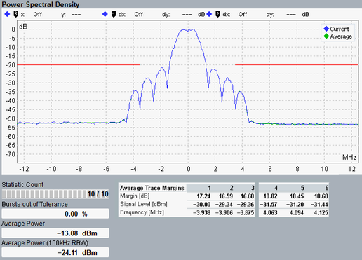

Detailed Views: Power Spectral Density
The view shows the power spectral density. Traces and statistical results are available.

Multi-evaluation: power spectral density
The power spectral density trace is measured ±12.5 MHz around the carrier frequency using 100 kHz resolution bandwidth (RBW) filter.
The displayed trace level is relative to the maximum average power measured using 100 kHz RBW within the ±1 MHz band around the channel center frequency.
The graphs of the current, average and maximum traces can be displayed.
The red limit line is generated by combing the specified absolute and relative limits.
The statistics below the diagram display the following results:
- "Average Power": average burst power during the carrier-on state
- "Average Power (100 kHz RBW)": the maximum spectral power measured within ±1 MHz from the channel center frequency using a 100 kHz resolution bandwidth.
- "Average Trace Margins": the vertical distance between the spectrum limit line and a trace. For two areas - one to the left and one to the right from the center channel - the margins represent the three worst values. It corresponds to the three minimum values determined for each area.
A negative margin indicates that the trace is located above the limit line, i.e. the limit is exceeded.
The frequency value indicates the frequency offset at which the margin value was found. These frequency offsets are indicated relative to the channel center frequency.
The margin results are calculated only for average traces.
For additional information, refer to "Common View Elements".